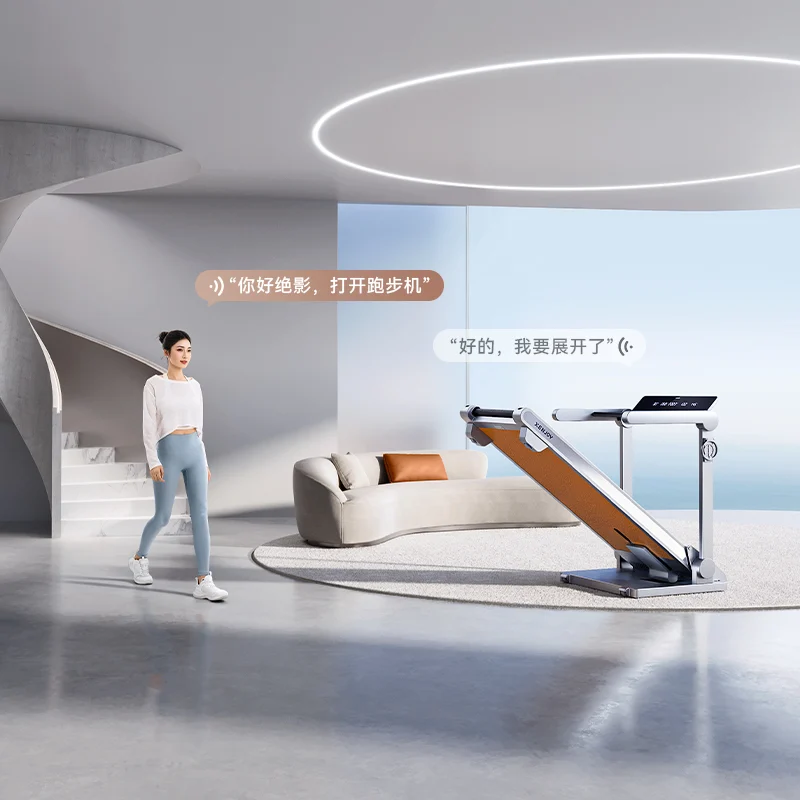
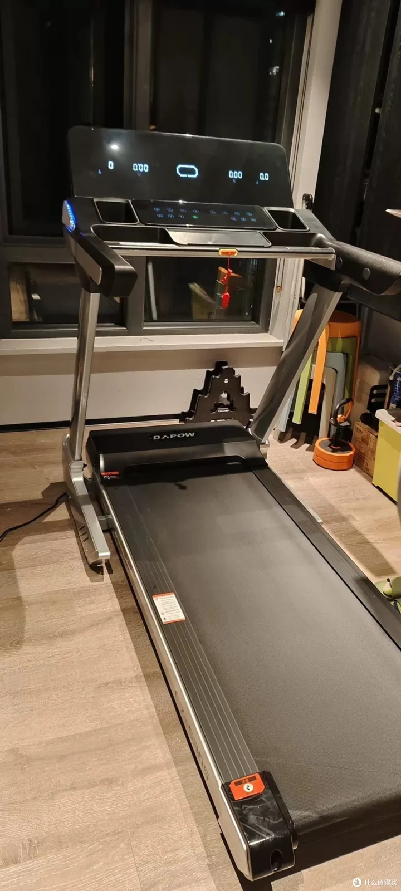
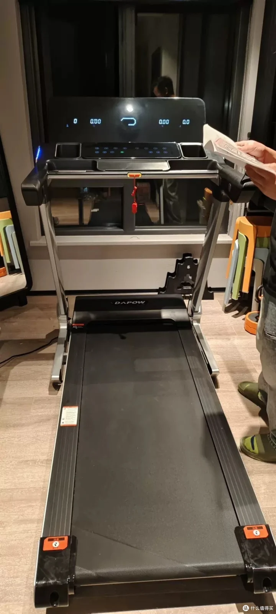
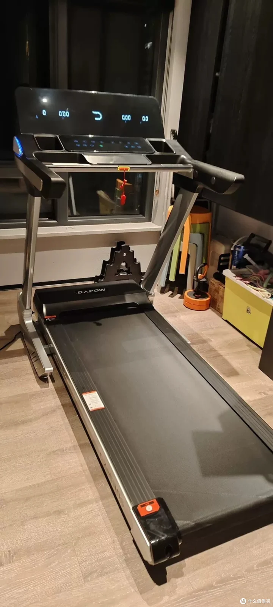
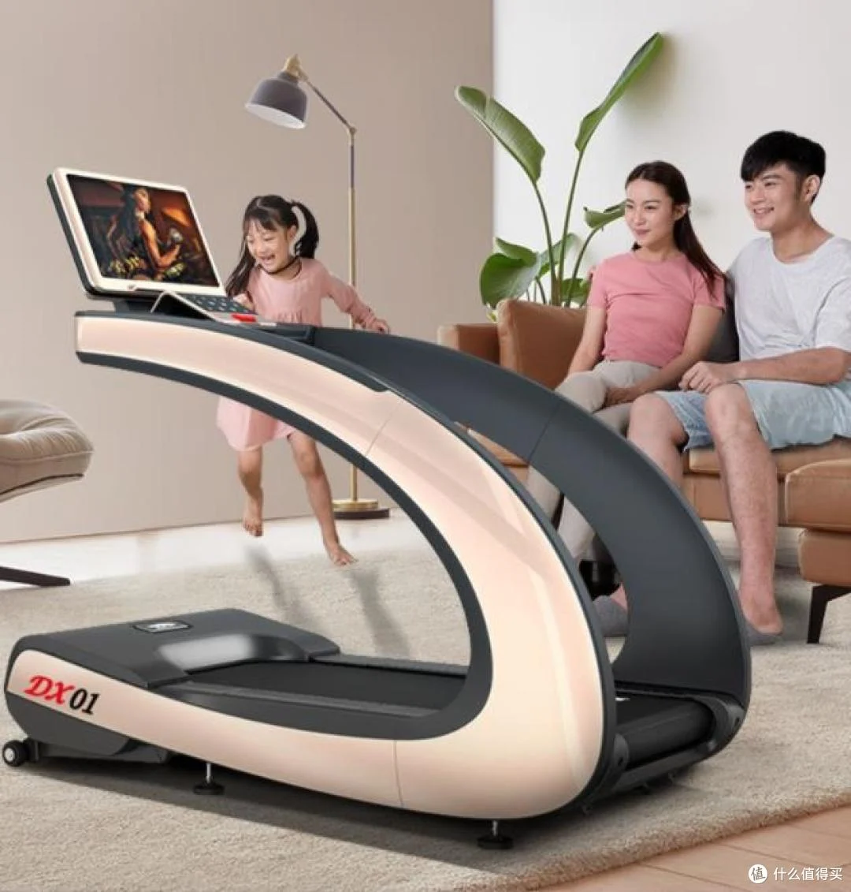
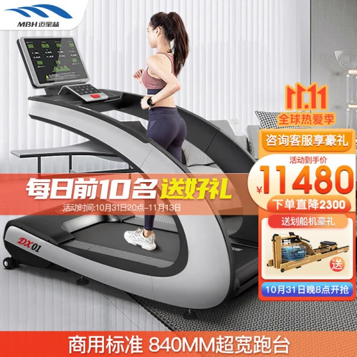
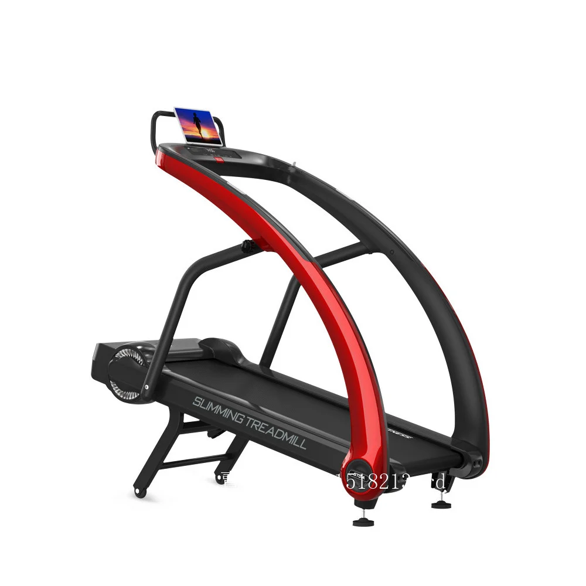

绝影 · 蝉翼 XT11
窄幅家电感 / 折叠后仍有完整背面
官网明确型号；与原淘宝SKU尚未核实
- 银灰骨架与暖橙色背板形成分区，视觉接近家居电器。
- 上部是细横梁、短扶手和小面板，体量集中在低位底座。
- 跑台抬起收纳，立柱仍然站立；竖放时背板成为主要展示面。



官网明确型号；与原淘宝SKU尚未核实

候选图，未确认同款：同题文章商品卡出现立久佳X9



文章明确DX01；资料为2022年，原淘宝SKU未核实


官网明确ST01；用户标题仅写ST，与原SKU未核实

